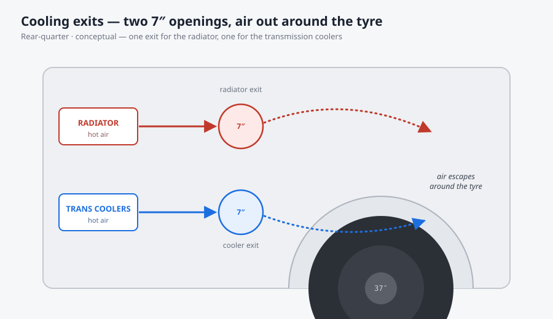

Plumbing, power & cooling, packaged driver-first
A narrow, tall-driver 4WD gets packaged from the driver out: boat-sided for room, a "brewery" of plumbing routed in order, twin 7″ cooling exits venting around the tyre, an Accusump mounted low, and the right brain — a Holley Dominator, not an HP. Learnings pulled straight from an RJ Fab build.
1 · Driver first — make the room before you fill it
The package starts with the person in it. This is a narrow truck with a big 4080 transfer case and a 6′2″–6′3″ driver, so the whole layout is bent around keeping headroom and clearance. The move that buys it: boat-side the body up a little — which opens underbody space to route and store the plumbing, the shifter and the oil accumulator down low, out of the cabin.
"Narrow truck, big 4080 transfer case and we want to leave as much headroom and clearance for the driver as possible… boat-side the truck up a little bit which gave us some room down here so we can store things down here." (~7:47–8:15)
Get this backwards and you cram the plumbing into the cabin or lose service access — the exact trap a tall-driver 4WD build falls into.
2 · Route in order — last what closes last
Routing follows the build sequence, not the other way around. The major structure and skid plates go on first and dictate the final paths; the main belly skid pan is fitted very last. Only once the big components are set does the plumbing get committed.
- Structure & skids → plumbing/cooling → electronics. The plumbing is wrapped up before the electronics go in, so wiring never fights a hose for the same real estate. (~5:52, ~6:10)
- The fuel-cell vent is the last piece of plumbing — it waits on the bedsides, the spare-tyre mount and the tailgate area, because those decide where it can exit. (~5:35–5:46)
- Belly skid pan last — so nothing underneath has to be unpicked to add it. (~5:52–5:58)
Commit the vent (or the belly pan) too early and you're re-routing after the body closes.
3 · Oil insurance, mounted low
Down in the freed-up underbody sits a big Accusump — an oil accumulator — wrapped and mounted low. It's cheap insurance against oil starvation at the steep angles and sustained heat an off-road truck sees, and it only fits because the boat-siding made the room for it.
"There's a big Accusump — it's like an oil accumulator — right down in here, is blue." (~8:05–8:10)
4 · Twin cooling exits — air out around the tyre
Cooling gets two separate 7″ exits, not one shared vent: one dedicated to the radiator, one to the transmission coolers, both dumping hot air so it escapes around the tyre. One cooler exit is curved up to its opening rather than run dead-straight, so the hot air is guided out instead of recirculating.

"We're going to have two exits… a seven-inch opening right here for air to escape out around the tyre… one for your radiator and one for the transmission coolers." (~5:00–5:21)
Share one undersized vent and you get heat-soak; give each system its own dedicated path and the air actually leaves.
5 · Making the exits — rolled, TIG'd, bead-rolled
The exits are fabricated, not bought. The aluminium is cut squared-off first, then the edge gets a half-tank roll for a radiused lip — better looking and stronger than a square edge — and the rolled pieces are TIG-welded together into a clean transition. The panels themselves are bead-rolled (B-rolled) around the edges for rigidity and finish.
- Half-tank roll → a radiused edge instead of a sharp, weak square cut. (~4:20–4:28)
- TIG weld the rolled pieces → a strong, leak-free joint that survives heat and vibration. (~4:20–4:21)
- Bead-roll the edges → stiffer panels that won't oil-can, and a finished look on parts you can see. (~4:33–4:35)
6 · The right brain — Dominator, not HP
With the plumbing wrapped, the electronics go in: the two switches, a Racepak PDM and Smartwire, and the engine computer. The ECU is a deliberate upgrade — a Holley Dominator, because the HP won't control the transmission, and this truck needs the full package run off one brain.
"We actually had an HP for this — it won't control the transmission — so now we have a Dominator computer." (~6:18–6:22)
The Dominator mounts behind the 12″ Pro Dash, and the height/clearance is proven with a mock-up (a simulator part) before anything is committed — so it isn't discovered too late that the computer fouls the dash, cooks, or can't be reached. (~6:22–6:32)
7 · A brewery of plumbing
The honest character of a high-end build: under the truck it "looks kind of like a brewery — it's pretty intense how much plumbing goes into these things." That density is the reliability play, not excess — and the way you verify it is to grab a creeper and actually get underneath to check the routing, not eyeball it from a stand. (~5:59, ~7:29–7:35)
Key takeaways
- Make the room first. Boat-side for underbody space and driver headroom — clearance and service access beat cramming.
- Route in order: structure/skids → plumbing/cooling → electronics; the belly skid pan and fuel-cell vent go on last.
- Two dedicated 7″ cooling exits — radiator and transmission — curved to vent hot air out around the tyre, not one shared, recirculating vent.
- Rolled + TIG + bead-rolled aluminium for exits that are strong, leak-free and won't oil-can.
- Pick the ECU that controls everything (Dominator over HP for trans control), mock the mount to prove clearance, and verify the whole package from a creeper.
Source & honesty. Everything here is [HEARD] on a build video by Rob “RJ” Fab (his ’49 Willys AWD project), with the timestamps noted inline. Credited, not reproduced — these are RJ's practical calls, captured as build principles to apply, not verified numbers.